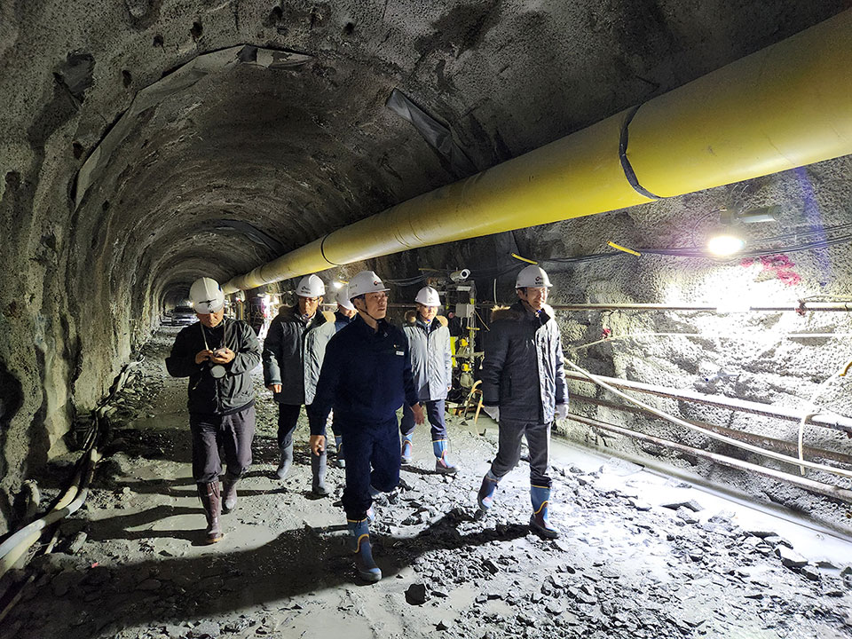
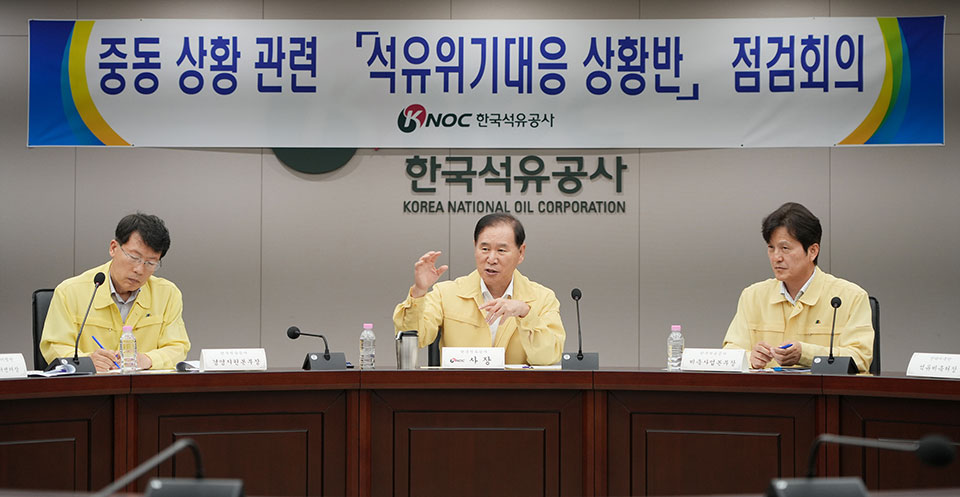
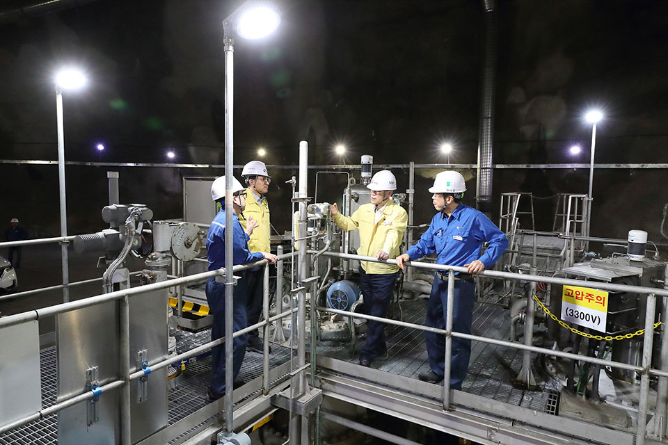
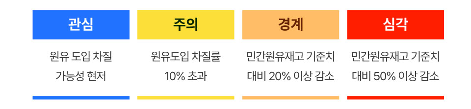

석유에 대한 중동 의존도가 높은 우리나라의 특성을 감안할 때, 세계정세 불안에 따른 석유의 수급 위기가 발생하면 우리의 생활은 어떻게 될까. 주유소에는 석유공급이 줄어들고, 물가 상승 등 경제 전반에도 미치는 영향은 클 것으로 예상된다. 하지만 과거 우리나라에 발생한 석유 위기 상황 시기를 살펴보면, 공사가 정부의 지시에 따라 즉시 정부방출유를 방출하며 석유 수급의 안정화에 중요한 역할을 수행해 왔다. 위기 상황이 발생하는 ‘그날’이 되면, ‘즉시’ 움직이는 공사의 석유 수급 위기 대응 체계를 살펴본다.

국제 정세 불안, ‘위기’ 대응 체계 점검
지난 6월 이스라엘이 이란에 대한 공습을 개시하고, 이후 이란 의회가
호르무즈 해협 봉쇄를 의결하면서 세계적인 석유 수급 위기에 대한
불안감이 고조됐다. 이에 공사는 다음 날 바로, 사장 주재로
석유위기대응 긴급 점검회의를 열고, 호르무즈 해협 등 중동 정세
악화에 따른 ‘위기’ 대응 체계를 점검했다.
여기서 말하는 ‘위기’는, 주요 산유국의 정정불안, 자연재해 등에 따라
석유생산, 수송, 정제 및 운송, 유조선 운항 등에 차질이 발생하거나
주요 산유국의 조직적인 원유 감산 정책 등의 상황이 발생하는 등의
형태를 말한다.
원유수급 분야 위기대응 실무기관인 공사는 산업통상자원부의 위기경보
발령에 따른 요청 및 명령에 따라 대응 활동을 수행하는데, 먼저,
위기징후를 산업통상자원부에 보고하고 정부의 상황판단회의를
지원하고, 위기 발령 시에는 위기 단계별로 대응조직을 구성하여 수급
위기대응 업무를 수행하게 된다.

석유수급 위기에 대응하는 체계적인 시스템
석유수급 위기에 대응하기 위한 공사의 책무는 크게 3가지.
비축유의 방출이 가장 우선적인 방법으로, ‘안정적인 석유공급과
전략적 비축’이라는 한국석유공사의 태생적 목적을 위해 국내 9개
비축기지를 운영하고 있는 만큼, 원유수급에 차질이 발생하면 이
기지에서 비축유를 긴급 방출한다. 그 다음으로는 공동비축물량의
우선구매권 행사. 공사의 유휴 비축기지에 저장되어 있는 타 산유국의
석유에 대해 우선구매권을 행사해, 위기 시 활용할 수 있는 석유물량을
추가로 확보한다. 마지막은 해외 생산 원유의 국내 도입. 해외에서
공사가 운영하고 있는 생산 광구 중, 국내 도입이 가능한 광구의
물량을 선정해, 비상시 국내로 원유를 도입할 수 있는 방안을 추진하게
된다.

에너지 위기대응, 공사의 준비된 움직임
공사는 이미 1991년 걸프전, 2005년 미국 허리케인 카트리나 사태,
2011년 리비아 사태, 2022년 글로벌 고유가 대응협력 및
러시아-우크라이나 전쟁 등 총 5차례에 걸쳐 국제사회와 공조해 정부
비축유를 방출한 바 있다. 정부가 긴급방출을 결정하게 되면 공사는
국내 정유사에 배정된 물량만큼, 송유관 또는 유조선을 활용해 즉시
방출하는 절차를 거친다.
이러한 책무를 실행하며, 위기대응 실무기관으로 행동매뉴얼을
운영하고 단계별 조치를 수행하게 되는데, 위기경보 발령 판단 기준은
총 4단계로 이뤄진다. 4개의 단계 중 ‘경계’에 해당했을 때 비축유
방출이 이뤄지게 되며, ‘심각’ 상황까지 가게 되면 원유 및 제품의
비축유 전면 방출이 진행된다.

공사에서는 정부 지시에 따라 비상조치방안을 즉각 실행할 수 있도록 제반 요건들을 세부적으로 점검하고 있으며, 경영진은 직접 비축유 방출 태세를 확인하기 위해 위기에 대비해 긴급 현장점검도 수시로 나서고 있다. 언제 발생할지 모를 국내 석유공급에 철저히 대비하고 있으며, 정부와의 긴밀한 공조 하에 국내 석유수급의 안정과 에너지 안보 확보라는 주어진 미션을 최선을 다해 수행하고 있다.